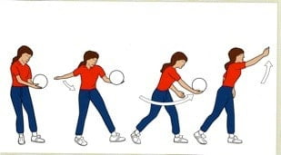
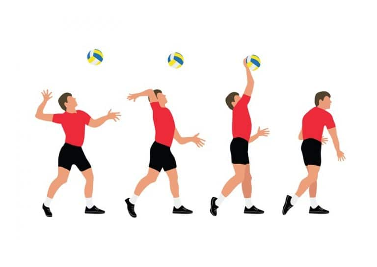
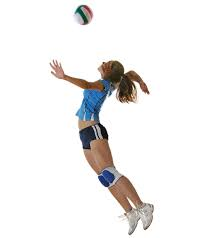
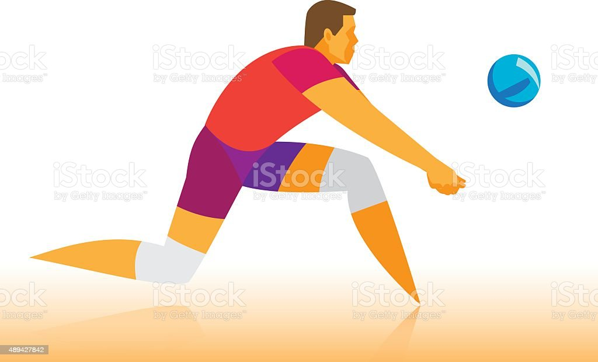
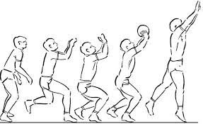
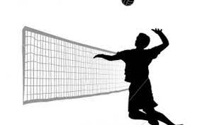
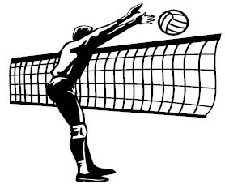
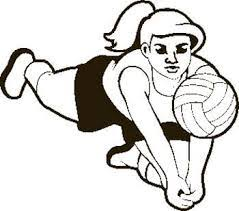

As Principais Técnicas do Voleibol são o Saque ou Serviço, a Recepção ou Passe, o Levantamento, o Ataque (Cortada), o Bloqueio e a Defesa.
O Saque ou Serviço é uma das principais técnicas do Voleibol, é o ato de colocar a bola em jogo. Na linguagem do Voleibol, o Saque é o fundamento que da início a um Rally. Um Saque bem executado é aquele que dificulta a Recepção (Passe) da equipe adversária, fará com que os jogadores da equipe receptora tenham que se afastar de suas posições e assim tenham mais dificuldade de realizar um Ataque.
“Rally no Voleibol são todas as ações que acontecem no jogo desde o momento que acontece um saque até o momento em que uma equipe marca um ponto. A cada novo saque é iniciado um novo Rally.”
“A Zona de Saque ou Serviço no Voleibol é uma área de 9 metros de largura atrás da Linha de Fundo de cada lado da quadra.”
Existem três tipos ou estilos de Saque no voleibol: o Saque por Baixo, o Saque por Cima,e o Saque por cima com salto ou Saque Viagem ao Fundo do Mar (Saque Viagem).
É um tipo de saque mais lento, no qual a bola viaja mais alta sobre a rede. É o saque mais indicado para iniciantes no Voleibol.
Se você for destro, segure a bola em sua mão esquerda na altura da sua cintura, com a mão direita fechada com o polegar para fora bata na parte inferior da bola com força suficiente para que ela ultrapasse por cima da rede e caia dentro da quadra adversária. Se você for canhoto basta fazer o mesmo movimento invertendo as mãos.
O Saque por cima é um saque mais rápido e eficiente, usado inclusive por jogadores profissionais.
Segure a o bola com uma ou as duas mãos, jogue-a para o alto, para cima da cabeça, bata na bola com a palma da mão.
O Saque Viagem um Saque muito rápido e eficiente, o mais usado no nível profissional de Voleibol.
O jogador deve ficar alguns passos afastado da linha de fundo, jogar a bola bem alto e para frente, correr, saltar e bater na bola com a palma da mão com o maior potência possível.
A Recepção ou Passe é um dos Fundamentos básicos do Voleibol, é o ato de receber o Saque adversário e passar a bola para o levantador da equipe. A Recepção ou Passe é o primeiro dos três toques permitidos para cada equipe.
A técnica mais utilizada no passe é a Manchete. É importante que durante a execução da Manchete que a bola seja tocada com o antebraço.
O Levantamento é normalmente o segundo toque dos três toques permitidos para cada equipe. A técnica mais utilizada para realizar um Levantamento é o Toque (ver imagem). Porém, o Levantamento também pode ser realizado de Manchete.
O objetivo do Levantamento é levantar a bola próxima a rede para que um companheiro de equipe realize um Ataque.
“Se o Líbero estiver na Zona de Ataque e fizer um Levantamento usando o Toque (voleio), os seus companheiro não podem corta a bola acima da faixa superior da Rede.”
O Ataque é, na maioria da vezes, o terceiro toque na bola permitido a cada equipe. A técnica mais utilizada na realização do Ataque é a Cortada. Geralmente o Ataque é feito saltando e batendo na bola com a palma da mão, com a maior força possível e para baixo.
A Largada é um tipo de ataque que não utilizar a força, é quando um jogador salta para realizar um ataque e, ao invés de realizar um Cortada, da um toque na bola com a ponta dos dedos com objetivo de desviar do Bloqueio adversário.
O Bloqueio (ver imagem) é um fundamento de defesa que tem como objetivo bloquear o Ataque e enviar a bola de volta para quadra adversária.
O Bloqueio pode ser individual (realizado por um jogador), duplo (realizado por dois jogadores) ou triplo (realizado por três jogadores).
A Defesa é um fundamento que pode ser realizado com qualquer parte do corpo, inclusive os pés. O objetivo da Defesa é impedir o exito do Ataque (cortada ou Largada) da equipe adversária.
A Defesa é um fundamento tão importante no Voleibol que existe jogador especialista em defesa, o Líbero.
